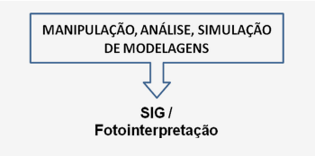

O significado etimológico da palavra Geoprocessamento, pode ser entendido como a formação justaposta de duas palavras GEO+PROCESSAMENTO, onde a primeira diz respeito às informações do espaço geográfico e a segunda diz respeito ao processamento informatizado dessas informações.
De uma maneira bastante simples podemos afirmar que Geoprocessamento é um conjunto de tecnologias responsáveis por coletar, processar, analisar e disponibilizar informações georreferenciadas. Abrange um conjunto de outras tecnologias responsáveis por coletar, processar e representar espacialmente um fenômeno, uma área ou um objeto.
Em um sistema informatizado, ao processarmos informações geográficas sejam elas de ordem ambiental (biótico ou abiótico), socioeconômico e/ou cultural, estamos fazendo uso de técnicas de Geoprocessamento.
Os autores Rosa e Brito (1996), em sua definição referente a Geoprocessamento, aponta que este é um conjunto de tecnologias destinadas a coletar informações, bem como organizá-las e tratá-las conforme a necessidade de uso. Ainda segundo os autores, esse conjunto é composto pela Cartografia, SIG, GPS, sensoriamento remoto, aerofotogrametria, processamento digital de imagens etc. Cada qual envolvido em uma etapa do processamento, desde a coleta até a distribuição espacial do resultado adquirido.
Para reflexão e organização das ideias, é importante reforçar que as compartimentações do geoprocessamento apontada pelos autores Rosa e Brito (1996), anteriormente mencionados, embora se apresentem de forma bastante abrangente, coincidem e estão contempladas no que fora apresentado no assunto introdutório deste material, elencando de forma objetiva e simplificada o SIG, Sensoriamento Remoto, Fotointerpretação e Cartografia como sendo os componentes estruturais do Geoprocessamento, os quais estudaremos nos próximos capítulos.
Outro autor que buscou definir o que é geoprocessamento de uma maneira mais completa e de uma forma mais clara é Rocha fazendo-o da seguinte forma:
Geoprocessamento é uma tecnologia transdisciplinar, que, através da axiomática da localização e do processamento de dados geográficos, integra várias disciplinas, equipamentos, programas, processos, entidades, dados, metodologias, e pessoas para coleta, tratamento, análise e apresentação de informações associadas a mapas digitais georreferenciados (ROCHA, 2000, p. 2010)
É importante pontuar a questão de o Geoprocessamento ser uma tecnologia transdisciplinar, haja vista que essa ideia representa o fato de a mesma estar associada à união de vários conhecimentos e a partir dessa complexidade, produz novos dados e novas informações que explicam e representam o meio em que vivemos.
Toda complexidade referente ao conjunto de conhecimentos mencionada na definição pode ser exemplificada pela Matemática, Física, Eletrônica, Informática, Geografia, Biologia, Geologia, Química etc. Cada qual com sua parcela de contribuição na produção de novos conhecimentos, que vai desde a produção do hardware propriamente dito, até a criação de softwares de Sistemas de Informação Geográfica, como também a correlação e processamentos de informações referentes ao meio físico e biótico.
O autor Fitz embasado em outras diversas definições e sintetizando-as, nos coloca uma definição para geoprocessamento da seguinte forma:
Pode-se considerar o Geoprocessamento como uma tecnologia, ou mesmo um conjunto de tecnologias, que possibilita a manipulação, a análise, a simulação de modelagens e a visualização de dados georreferenciados (FITZ, 2008, p. 24).
Tomando como exemplo a definição do autor Fitz (2008), vamos pontuá-la correlacionando as ações com as diversas compartimentações que estruturam o Geoprocessamento:
Adquirir informações sem o contato direto, damos o nome de sensoriamento remoto. As informações são obtidas por meios de sensores acoplados em satélites, aviões, espaçonaves, VANTs etc. Os resultados obtidos são imagens ópticas ou de radar, e ainda dados obtidos por sensores não imageadores que produzem dados na forma de gráficos, dados numéricos etc.
Todas as informações produzidas a partir do Sensoriamento Remoto, sejam elas dados em forma de imagens ou dados que não sejam no formato de imagem, são introduzidas, analisadas, e reproduzidas em um ambiente de SIG, dando uma ênfase em especial para a técnica de fotointerpretação que consiste na analise visual de elementos de uma imagem, sejam elas fotos aéreas, imagem de satélite ou de radar.
Uma vez processadas as informações através de um SIG, e conforme a necessidade demandada, os dados são representados espacialmente por meio de mapas e cartas, seguindo os padrões teóricos e estéticos da Cartografia.
É relevante fazer uma reflexão acerca da Cartografia, em relação ao fato de a grande maioria dos autores colocá-la somente no final das etapas, no momento da representação espacial dos dados processados. A Cartografia é composta intrinsecamente por diversos conceitos como, por exemplo, sistemas de coordenadas, escalas, projeções cartográficas, entre outros que estão sempre presentes em todas as etapas da prática do Geoprocessamento. Embora a Cartografia esteja sempre esquematizada pela grande maioria dos autores como componente da etapa final do geoprocessamento, ao mesmo tempo, ela sempre está presente, como por exemplo, ao georreferenciarmos uma imagem haja vista que para esse procedimento se faz necessário o uso do conhecimento de coordenadas, uso de determinado sistema de projeção, entre outros. Ambos os procedimentos são intrínseco aos conteúdos científico, artístico e técnico da Cartografia.
Reforçando o que fora dito no tópico anterior, e mais uma vez sintetizar o assunto proposto para esse capítulo, podemos afirmar que geoprocessamento é uma tecnologia que permite ao usuário manipular, analisar, simular e visualizar dados geográficos de ordem abiótica e biótica, e que essas etapas estão aconjuntadas nas compartimentações básicas que estruturam o Geoprocessamento, sendo elas o Sensoriamento Remoto, SIG/Fotointerpretação e a Cartografia.